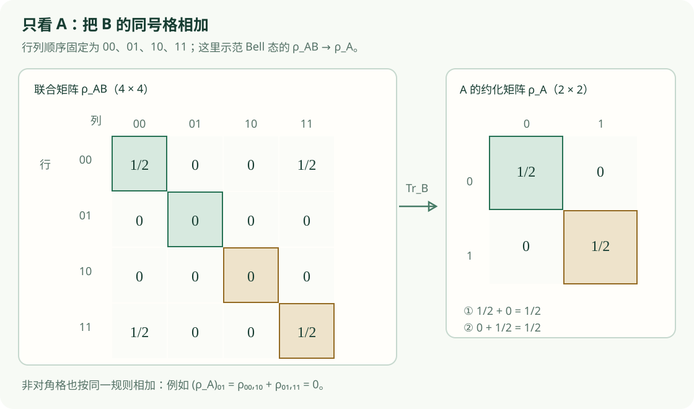
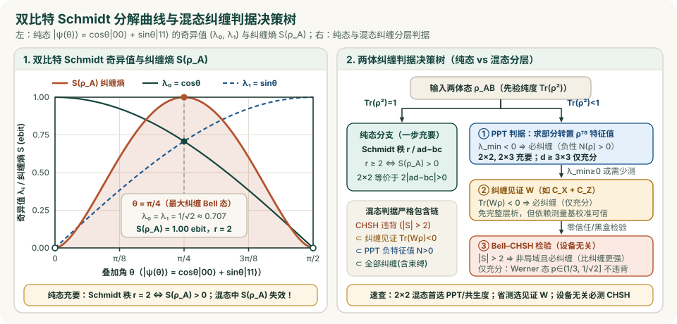

03｜多量子比特、量子纠缠与非局域性
单个量子比特已经能展现叠加与干涉，但量子计算真正把经典世界甩在身后的起点，是两个以上的量子比特放到一起的时候。从这一章开始，我们不再只盯着一根孤零零的态矢量，而是亲手走进多比特的联合空间，直面量子力学里最反直觉、也最核心的资源——量子纠缠（quantum entanglement）与非局域关联（nonlocality）。
读完这一章，你应该能拿一张草稿纸独立算清楚五件事：
- 按统一基序写出多比特联合态，并用分块表格手算并行门矩阵 ；
- 用四格判据 判断任意两比特纯态是否纠缠，并写出四个 Bell 态在不同测量基下的关联；
- 对联合密度矩阵做偏迹，求出只观察其中一方时的约化态，并看懂为什么纠缠不能用来超光速传信；
- 用奇异值分解（SVD）桥接 Schmidt 分解、纯化唯一性与纠缠熵，再用纠缠见证、Peres–Horodecki PPT 判据（及负性 ）与 LOCC 单调性分辨经典关联混态与真正的量子纠缠；
- 通过 CHSH 合作博弈把经典的 赢率天花板与量子的 赢率逐行算透，用 Mermin–GHZ 悖论见识单次决定性矛盾，并理解三比特纠缠为何受单配性约束。
读本章前，建议先熟悉第 01 章：数学工具的列向量、矩阵乘法与张量积，以及第 02 章：单量子比特的 Bloch 球和投影测量。初次阅读可按两轨推进：★ 首遍主线聚焦 §1–§4、§5.1、§5.3、§6.1 与 §7.1–§7.3、§7.5；☆ 进阶选读（文中已标明）涵盖复系数 SVD 手算、纯化、PPT/LOCC、Tsirelson 界、Mermin–GHZ 悖论与三比特单配性。全章严格沿用本书高位在左（大端序） 约定（，左 右 ；与小端序软件如 Qiskit 的位序对照见符号表）。
1. 多量子比特与张量积：空间为何指数膨胀
1.1 两比特的计算基态与复数乘积态
两个经典比特有 种联合结果；量子力学将其升级为四维复空间 里的四个正交归一计算基态 （列向量与印章分块规则已在第 01 章第 7 节完整列出，其中 与 互相正交，顺序不可交换）。
把两个一般单比特纯态 与 （）按分配律展开，得乘积态
其模平方和为 ，自动归一化。
拿一道含虚数的乘积态练手：计算 （其中 、）。这里 ，逐格代入得
如果在计算基上同时测量两个比特，四种结果的概率都是模平方 ，总和为 。单次测量只会以等概率吐出 00, 01, 10, 11 中的一个两位串，而不是同时读出四个振幅。
1.2 并行操作怎么算：张量积矩阵的分块手算表
同一拍里 Alice 施加单比特门 、Bob 施加单比特门 ，联合操作是按第 01 章第 7.2 节印章分块规则构造的 矩阵 。下面亲手算一张常用的并行门 （）：
| 的位置 | 对应元素 | 生成的 子块 | 落入 矩阵的行列范围 |
|---|---|---|---|
| 左上 | 第 行；第 列 | ||
| 右上 | 第 行；第 列 | ||
| 左下 | 第 行；第 列 | ||
| 右下 | 第 行；第 列 |
把四块原封不动拼起来，立刻得到完整的 矩阵：
现在用两条独立路径计算 来回验：
路径一（直接做 矩阵乘列向量）：，取出矩阵的第二列即可，逐行检查：
路径二（利用混合积法则 ）：分别算两位再合体：
两条路的结果一格不差！这也顺便透露了一个省力窍门：面对可分态上的并行门，永远优先走路径二；但面对稍后出场的纠缠态或双比特门（如第 04 章的 CNOT），就不能拆开各自算，必须老老实实回到联合空间。
1.3 推广到 个量子比特：指数维数意味着什么
每多加一个量子比特，原来的每一个基态字符串都能在末尾接出 或 ，基态数量直接翻倍。因此 个量子比特的纯态生活在 维复向量空间 中：
其中 是长度为 的二进制串， 是它的复振幅，计算基测量得到位串 的概率为 。
为什么多比特世界会突然变得如此辽阔？拿“彼此独立的 个单比特”和“允许相互关联的一般 比特纯态”比一比实数自由度就一目了然：
- 个互相独立的单比特，每个纯态由 Bloch 球上的 个实角 决定，合起来只需要 个实数；
- 一个一般 比特纯态有 个复振幅（共 个实数），扣除归一化条件（）和不可观测的整体全局相位（），一共需要 个独立实数。
| 量子比特数 | 态空间维数 | 独立乘积态实参数 | 一般纯态实参数 |
|---|---|---|---|
仅仅 个量子比特，一般纯态的 个实参数就比乘积态的 个多出了 个自由度——多出来的那部分空间，正是纠缠居住的地方。到了 个量子比特，记录一个一般态矢量就需要超过 个复数，经典内存瞬间被撑爆。但务必保持冷静：巨大的态空间不等于免费算力——一次测量依然只能读出一个 位经典串，只有经过精心设计的量子干涉线路，才能让目标信息浮出水面。
2. 可分纯态与纠缠纯态： 四格判据
2.1 什么时候联合态拆不开
刚刚看到，两比特一般纯态有 个实自由度，而乘积态 只有 个。这就自然引出一个核心问题：随便给你一个四分量的两比特纯态，怎么一眼判断它能不能拆成两个各自独立的单比特态？
先把定义立稳：
- 如果一个两比特纯态 能够写成单个张量积 的形式，就称它为可分纯态（separable pure state），也叫乘积态（product state）。此时 Alice 和 Bob 各自都拥有明确的单比特纯态。
- 如果不存在任何一对单比特态 让 成立，就称它为纠缠纯态（entangled pure state）。
把任意两比特归一化纯态按本章基序写成
并把四个复系数排成一张 系数矩阵（行标属于 ，列标属于 ）：
判断这个两比特纯态是否可分，有一条极其干净的四格判据：
只要 ，它就是纠缠纯态。这里的 可以是任意复数，按标准复数乘法计算即可。
2.2 充要性完整证明（含 边界）
别把 当成黑箱口诀，我们花两分钟把它正反两个方向全部证透。
方向一（可分 ）：若 ，对照第 1.1 节的展开式有 。直接算：
方向二（ 可分）：分 和 两种情况讨论，确保零边界也不漏掉。
情况 1（）：由 解出 。直接尝试因式分解，乘开右边检查全部四格：
再把两个因子各自归一化。记左因子长度 ，右因子长度的平方为
最后一步用到 和归一化条件 。因此令 、，两者长度严格为 ，且 。
情况 2（）：由 得 ，因此 和 至少有一个为零。
- 若 ，则必有 ，此时 ，两因子天然归一化（）；
- 若 ，则 ，同样天然归一化（）。
从线性代数视角看，非零 矩阵 满足 等价于 ，也就是可以写成一列乘一行 ——这正是第 5 节 Schmidt 分解的特例。
2.3 四组对照算例：项数多不等于纠缠
拿四个具体态来练手，顺便避开初学者最常掉进去的“数项数”误区：
两项可分态：。四系数 ，算得 。确实可拆成 。
四项全非零，依然可分：。四系数全是 ，算得
它就是 ！请记住：不要看到式子里有四项就误以为它纠缠。
带复数的四项可分态：。系数为 ，按复数乘法算：
它正好等于 ，其中 。
只有两项，却是最大纠缠态：。系数为 ，算得
它无论如何都拆不成 。类似地，把 前的系数换成 得到 ，算得 ，同样是纠缠纯态。
边界提醒： 只适用于两比特纯态。如果状态是混态（例如第 6 节的经典硬币混合），或者超过两个比特，就不能拿行列式直接一刀切了。
3. 四个 Bell 态：两比特纠缠的标准坐标轴
3.1 四 Bell 态的定义、正交归一性与基的角色
在所有两比特纠缠态里，下面四个地位最特殊，统称 Bell 态（Bell states）或 Bell 基（Bell basis）：
记名字时不用死背符号，抓住两条规律就一辈子忘不掉：
- 字母 表示同号（只包含 和 ，计算基测量时两人总得到相同结果）；字母 表示异号（只包含 和 ，计算基测量时两人总得到相反结果）；
- 右上角的 或 表示两项之间的相对相位。
每个 Bell 态都有两项振幅，模平方各为 ，相加等于 ，并且 ，全是纠缠态。更重要的是，这四个态两两正交。以最容易让人误以为“差不多”的 和 为例，直接做左共轭内积：
同理 ，而任何 态与 态之间因为计算基标签毫无重叠（ 与 互斥），内积也全为零。在四维空间 里找到四个正交归一向量，它们就构成了一组完整的正交归一基——这就是后面第 04 章量子隐形传态与超密编码里“Bell 基测量”的舞台。
把四个 Bell 态在三个 Pauli 关联算符 、、 下的本征值（同时也是期望值）一起列成速查表。不妨亲手核对一行 在 下的作用：因为 、，所以
于是 ，本征值竟然是 ，不是 ！把其余三个态按同样步骤逐一展开，就得到下面这张极有用的对照表：
| Bell 态 | 四分量列向量 | 本征值 | 本征值 | 本征值 | |
|---|---|---|---|---|---|
盯着最后一行 （单态，singlet state）多看两秒：它在 、、 三个相互垂直的轴上本征值全是 ！事实上，无论 Alice 和 Bob 共同沿着三维空间里哪一个方向测量， 永远给出完全相反的结果。
3.2 换到 基：相对负号如何现形
看一眼 和 的计算基展开：两者测计算基时，都是 00 占 、11 占 。那中间那个负号是不是和全局相位一样看不见？完全不是！ 只要 Alice 和 Bob 一起换成 基 测量，相对负号立刻显出原形。
回顾第 02 章：，。把它一步不跳地代进 和 ：
现在分别相加和相减，再除以 ：
相加得 ：异号项 与 一正一负正好抵消，同号项翻倍，得
相减得 ：同号项 与 抵消，异号项翻倍，得
结果截然相反！在 基下同时测量两端时， 只会给出同号结果 或 （各 ），而 只会给出异号结果 或 （各 ）。顺手也可按同样方法验证单态 ：把 和 展开相减，得
无论在 基还是 基，它都严格反相关。
这也提醒我们一条很实用的实验原则：在计算基里看到 00 和 11 各占一半，远不足以证明实验室制备出了 ——不仅分不清它是 还是 ，甚至连它是不是一堆“毫无纠缠的经典硬币结果”都分不清（第 6 节会亲手验算这件事）。
4. 局部操作不能单独揭示整个纠缠态
现在碰到一个很耐人寻味的物理问题：假设 Alice 和 Bob 共享最大纠缠态 ，两人各自带着自己的那颗比特坐高铁去了不同的城市。Alice 在自己的实验室里，只能接触到比特 ——她该用什么数学对象来预测自己手里所有测量的结果？
答案不是任何一个单比特纯态 ，而是一张 的密度矩阵（density matrix）。在正式展开第 05 章之前，这里先记住最核心的一条区分：
- 一个纯态 写成密度矩阵是外积 ；
- 如果系统以经典概率 处于不同纯态 （），联合描述是按概率加权的矩阵之和 ，绝不能把各个右矢直接相加。
合法的密度矩阵满足三条性质：厄米（）、正半定（，所有本征值非负）和单位迹（）。对任意可观测量 ，期望值统一写作 。
4.1 先把联合态写成 密度矩阵
把 写成密度矩阵 。展开外积：
按 的行列顺序把列向量乘共轭行向量，逐格展开成 矩阵：
先读懂这四个非零格子的含义：
- 左上角 和右下角 在主对角线上，代表计算基测出 和 的概率；
- 右上角 和左下角 是连接 与 的非对角相干项（coherence）。它们不是额外结果的概率，而是量子叠加与纠缠留下的“干涉桥梁”——第 6 节马上会看到，经典硬币混合态恰恰缺少这两格。
4.2 偏迹 ：只看 时怎样消去
Alice 只观察 时看到的局部状态叫约化密度矩阵（reduced density matrix），记作 。从联合态 算出 的运算叫对子系统 取偏迹（partial trace），记作 。
偏迹的一般定义是在 的任意一组正交归一基 上做夹心求和：
拆到每一项外积上，规则非常清爽——对 的外积取迹，把 的外积原封不动留下来：
其中 属于 ， 属于 。在计算基下， 只有在 时等于 ，否则等于 。翻译成矩阵格子的操作口诀就是：固定 的行标 与列标 ，把联合矩阵里 的行标与列标相同（ 和 ）的那两格加起来！
我们把 的四个格子一步不跳地全部算出来：
拼成 矩阵，就得到


放大查看 ↗用外积偏迹规则验算一遍： 的 部分给出 ， 给出 ，两个交叉相干项全部消掉，只剩 。
这一结果非常值得留意： 在整体上是一个信息完备、毫无不确定性的纯态，可单独看 Alice 手里的那颗比特，却是完全随机的最大混态 ——无论她沿 Bloch 球上哪一个方向测量，两个结果的概率永远严格各占 ！纠缠态的信息并不藏在 里，也不藏在 里，而是完全藏在两人之间的联合关系里。
为什么说偏迹不是随便凑出来的算法，而是预测 端所有局域测量的唯一正确工具？因为对任意只作用在 上的可观测量 （在联合空间中写成 ），我们按迹的定义展开：
等式左边用完整的四维联合态预测 Alice 的局部实验，等式右边只用二维约化矩阵 预测，两者对所有局域可观测量 恒等。这意味着，凡是 Alice 在本地能测出来的一切统计分布，全都已经分毫不差地装在 里了。
4.3 算例：部分纠缠态的约化态不必是最大混态
初学者常有一个错觉：“只要是纠缠纯态，局部约化态一定等于 。”不对——只有最大纠缠态的约化态才是 。我们手算一个部分纠缠纯态看看：
第一步，核对归一化与纠缠：；四格判据 ，确实纠缠。
第二步，写出 联合密度矩阵：
第三步，按四格规则逐一求 ：
所以 。用两条路核对 Alice 的 期望值：
- 联合态直接算：；
- 约化态直接算：。
再算一下 的纯度：。因为 ，它既不是纯态（纯度 ），也不是最大混态（纯度 ），而是介于两者之间的偏置混态。
4.4 局部测量、条件后态与无信号定理
现在把“测量其中一方”写清楚，顺手粉碎科幻作品里最泛滥的误解——“利用量子纠缠能超光速发消息”。
先看 Alice 在计算基上测量 。结果 对应的联合投影算符是 ，结果 对应 ：
- 结果 ：未归一化分支 ，长度平方给出概率 ，除以 归一化得条件联合后态 （Bob 手里此时对应 ）；
- 结果 ：未归一化分支 ，概率 ，条件联合后态为 （Bob 手里此时对应 ）。
对部分纠缠态 做同样的计算：结果 的概率 、条件后态 ；结果 的概率 、条件后态 。
关键分水岭来了：Alice 有没有把她的测量结果用电话或无线电告诉 Bob？
如果没有告诉 Bob（或者干脆丢弃了记录），Bob 根本不知道宇宙落进了哪一个分支，只能把所有分支按各自概率加权混合，得到非选择后态（non-selective state）：
对 取偏迹，算出 Bob 此刻的无条件局部态：
和 Alice 动手之前分毫不差！哪怕 Alice 临时改主意换成 基测量，Bob 的两个条件态变成 （概率 ）与 （概率 ），混合起来依然是 ！Bob 埋头盯着自己实验室里的仪表盘测上一万次，根本分辨不出远方的 Alice 到底有没有测、沿什么方向测、或者施了什么门。
这一结论不仅对 Bell 态成立，而且对任意联合态 都严格成立，称为无信号定理（no-signaling theorem）。我们来一步不跳地证明最核心的两种局域操作（完整的一般噪声信道证明将在第 05 章用 Kraus 完备关系给出）：
Bob 在远方施加任意局域酉门 （）：新联合态为 。对 求偏迹：
令 。因为 是酉算符， 仍是 的一组正交归一基（）。而偏迹与 侧选取哪一组正交归一基无关（就像矩阵的迹与换基无关），所以
Bob 在远方做任意局域投影测量 （）且不向 Alice 公布结果：非选择联合后态为 。对任意 端可观测量 ，利用迹的循环性 以及 与 的对易性，算得
因为这对所有 均成立，所以 丝毫未变！
换个日常视角理解这件事：纠缠在测量发生时确实建立了跨越空间的强关联，但必须等到 Alice 把她的经典记录（光速以内）发给 Bob，两人把数据按轮次对齐分组之后，才能看见那份超越经典的条件关联。纠缠与相对论的因果律和平共处。
马上核对：对单态 ，Alice 在计算基测得 时，Bob 的条件态是什么？只保留 的项得未归一化向量 ，概率 ，归一化条件联合后态为 ，因此 Bob 确定处于 。
5. Schmidt 分解与二分纯态的纠缠熵
5.1 把任意二分纯态配对成一对一正交基：SVD 到 Schmidt 的显式桥接
回头看看我们最喜欢的两个纠缠态： 和 。它们写起来特别清爽，因为 的 和 的 刚好一一配对、各自正交，不存在交叉项。
如果随手写一个四项全满、还带着复数的二分纯态，是不是只能乱糟糟地挂着四项？线性代数给了我们一把非常趁手的工具——Schmidt 分解定理（Schmidt decomposition）：对任意有限维二分纯态 （维度分别为 ），一定存在 的一组正交归一基 和 的一组正交归一基 ，使联合态坍缩成单重求和的一一配对形式：
其中所有 Schmidt 权重 且 ；非负实数 称为 Schmidt 系数（振幅）；非零项的个数 称为 Schmidt 秩（Schmidt rank）。
这个定理直接长在矩阵奇异值分解（SVD）上。把态展开在计算基下写成 ，沿用第 01 章第 6.4 节与全书符号表的 SVD 符号，对 的系数矩阵 做 SVD：，其中 是酉矩阵， 的非零对角元是非负奇异值 。按矩阵乘法逐元素写出 ，放回态矢量里：
盯紧这一步最容易写错的“转置 vs 共轭”陷阱！ 拿一个非对称复系数两比特纯态亲手验算一遍：
核对归一化：；四格判据 ，确定纠缠。现在显式写出它的三因子 SVD 矩阵：
逐格乘开验算 ：
现在从矩阵里直接读出两边的 Schmidt 向量：
侧取 的两列：、；
侧直接把 的第 行不取共轭、原封不动立成列向量：、！验证重组：
反面警示：如果你先算出 ，却忘了对 的列取复共轭，就会把 误读成 、 误读成 ，还原出 ——所有虚数符号全反了！
把这套矩阵—代码对应关系收进一张对照速查表（注：NumPy 函数文档常把左奇异酉阵记作 U，对应本手册的 ）：
| 对象 | 矩阵表达（） | Python/NumPy (W, s, Vh = np.linalg.svd(C)) |
常见错误 |
|---|---|---|---|
| Schmidt 系数与权重 | ， | s[j]，s[j]**2 |
把振幅 当成概率权重 |
| 侧 Schmidt 向量 | 的第 列 | W[:, j] |
误取 的行向量 |
| 侧 Schmidt 向量 | 的第 行直接转置（即 的第 列取复共轭） | Vh[j, :]（不要再取共轭） |
误用 Vh[j, :].conj() 或直接拿 的列不共轭 |
对 Schmidt 形式做一次偏迹，威力立刻全部显现。把 对 取偏迹，利用 ，所有 的交叉项瞬间归零，只留下对角和：
三条极其锋利的推论立刻落袋：
- 可分与纠缠的统一判据：二分纯态可分 Schmidt 秩 ；纠缠 。
- 两端非零本征值谱完全相同：即使 是 2 维、 是 100 维， 和 的非零本征值集合也一模一样，恰好都是 （多出的维度只能补零本征值）。
- 振幅与权重别混写： 已经是 Schmidt 形式，它的 Schmidt 系数是 ，而 Schmidt 权重（即约化态本征值）是它们的平方 。
5.2 进阶选读：复系数完整手算—— 的陷阱与 回验
光算完现成的 SVD 还不够踏实，现在我们挑一个带着虚数单位 、三项非零且 都非对角的两比特纯态，从头到尾亲手算出它的 Schmidt 分解，再拼回 ，顺便抓出复系数偏迹里最容易出现的共轭错误。
取基序 下的纯态
先检查归一化：；再检查可分判据：，确定是纠缠态。记住： 的行标是 、列标是 ，它是一张系数表，不是量子门。
第一步：用系数矩阵 写出 和 ，抓住共轭陷阱。
因为联合密度矩阵元素是 ，按偏迹规则逐格求和：
请把目光死死钉在第二条式子上： 是 ，不是 ！ 我们把两个矩阵都按行乘列算出来做对比：
逐格相乘得到真正的两侧约化密度矩阵：
对照一下如果顺手误写成 会算成什么：
与真正的 互为复共轭：两者本征值恰好相同，但非对角元的虚部正好反号（直接把 Bob 的 期望值算反了符号）！如果只核对本征值，这个致命错误会被完全掩盖。
第二步：解 的本征值（即 Schmidt 权重 ）。
矩阵 的迹为 ，行列式为
特征方程为 ，套用二次求根公式得
两权重均为正数且 ，所以 Schmidt 秩 。对应的 Schmidt 振幅是 与 。
第三步：求 侧的正交归一基 。
解 ，看第一行方程：。令 ，方程化为 。取 ，则 ，归一化后得
代入 逐行验算本征方程（留意 满足 ，故 ）：
再检查两向量正交性：由韦达定理 ，左共轭内积分子为 ，故 。
第四步：求与 配对的 侧向量 ，并拼回 做完整回验。
在 Schmidt 展开 两边左乘 ，因为 ，直接抽出配对向量：
再次提醒：这里的共轭星号 来自左矢 ，绝不能漏掉！把 乘进 ，再除以 ：
先验算 的归一化：由 与 ，分子的模平方为 ，而分母平方恰为 ，故 严格成立。
现在把刚刚算出的列向量按第 5.1 节的 SVD 规则显式拼成三张 矩阵——、，以及把 不取共轭直接横放成行拼出 ：
利用 （故 ）与韦达定理 、，先算出公共分母 ，再逐格核对全部四格：
- 格：；
- 格：分子中 ；
- 格：提取公因子 后通分，分子为 ，除以分母 精确得 ；
- 格：因 ，分子与 格完全一致，故同样为 。
因此 ，连每一个虚数符号都不差。
5.3 二分纯态的纠缠熵：用 bit 度量纠缠强弱
有了 Schmidt 权重 ，我们就可以给任意二分纯态打一个定量分数，叫做纠缠熵（entanglement entropy），定义为一侧约化密度矩阵的 von Neumann 熵（全书信息熵统一取以 为底的对数 ，单位为 bit，常也称 ebit）：
物理直觉非常直接：它衡量 Schmidt 权重分布得有多均匀——分布越均匀，只看单侧时越“一无所知”，说明两端牵连得越紧。把我们算过的四个纯态排成一排比比看：
任意乘积纯态（如 ）：只有一个权重 ，约定 ，且 ，故
四个 Bell 态（如 ）：权重 ，因 ，故
这是两比特系统能达到的最大纠缠熵，称为 。
部分纠缠态 ：权重 。先把 和 拆开算：
复系数态 ：权重 ，逐项计算：
一条必须用红笔圈出来的红线： 等价于纠缠，这一结论只适用于整体是纯态的二分系统！ 只要联合态本身是混态，局部熵立刻失效——下一节马上就看一个局部熵高达 、纠缠却严格为零的经典混态。
5.4 进阶选读：纯化构造、唯一性与 Uhlmann 定理直觉
刚刚我们是从一个两体纯态 出发，对 求偏迹得到混态 。现在反过来问一个极有威力的逆问题：随便给你一个混态密度矩阵 ，能不能总给它找一个“隐身参考系统” ，把 看成更大空间上某个纯态 的约化态？
答案是肯定的，这个把混态还原成更大纯态的操作叫纯化（purification）。借着 Schmidt 分解，三步就能把它的存在性、唯一性和几何威力全部看透：
存在性构造（直接复用第 4.3 节算过的混态）：设任意混态 的谱分解为 （）。引入一个维数至少为 的参考系统 及其一组正交归一基 ，写下纯态
这本身就是一套合法的 Schmidt 形式，对 求偏迹立即还原 ！例如对 ，立刻构造出 ，第 4.3 节已经逐格算过它的偏迹正是 。
纯化的唯一性小例（仅差 侧的局域酉变换）：同一个 可以有无数个不同的纯化，但它们之间绝非毫无关系。拿同一个 ，把 侧的正交基从 换成 ，构造第二个纯态：
直接对 求偏迹验证：展开 的四项，因 而 ，交叉项彻底归零，同样得到
而比对 与 会发现，因为 、，两者之间精准满足
这不是巧合！因为任何纯化 的 Schmidt 分解里， 侧的权重 与本征子空间都被 钉死了，唯一能自由挑选的只有 侧那组正交归一基。因此，同一个 的任意两个同维纯化之间，必然且仅相差参考系统 上的一个局域酉变换 （若两纯化的参考系统维数不同，则相差一个等距变换 ）。第 8.1 节证明极端纠缠单配性时，全靠这条性质两行收官。
Uhlmann 定理的几何直觉：在第 13 章与第 18 章里，两张混态密度矩阵 的根保真度定义为 。为什么它会写成这么一个带着双层根号的公式？Uhlmann 定理（1976）给出了极其干净的几何解释：把 和 各自纯化成 和 ，然后不动 、只旋转隐身参考系统 上的局域酉门 ，所能对齐到的最大纯态重叠恰好就是根保真度：
一眼手算个特例验证：取 （纯化 ）与纯态 （纯化 ）。任意 作用在 上得到归一化态 ，重叠模长为 ，当 时取最大值 ——正好等于 ！（完整混态证明见第 13 章与第 18 章。）
练 03-A（SVD 共轭陷阱与纯化唯一性）：对第 5.1 节的非对称纯态 ，(1) 分别按公式 与 算出两侧约化密度矩阵，并与错误矩阵 对比；(2) 求它的纠缠熵 ；(3) 写出一个把 侧基取为 的 纯化态，并给出从标准纯化 变过去所用的局域酉门 。
自检核对：(1) ；，而错误矩阵 恰好把非对角虚部算反了号；(2) ；(3) 所求纯化恰好就是 本身！因 、，所以局域酉门为 。
6. 经典相关与量子纠缠：见证、PPT 判据与 LOCC 直觉
6.1 可分混态与纠缠态：为什么只测计算基会看走眼
想象桌上摆着两套制备装置，每次都往外吐出一对量子比特：
- 装置一（真纠缠）：每次都确定制备 Bell 纯态 ，密度矩阵为 ；
- 装置二（纯经典硬币相关）：先在幕后抛一枚公平经典硬币——正面就制备乘积态 ，反面就制备乘积态 ，但不告诉你硬币是哪一面。它的联合状态是两种乘积态的经典概率混合：
把两张 矩阵并排摊在草稿纸上，差别一眼可见：
先立清混态情形下“可分”的正式定义：如果一个两体密度矩阵 能写成若干乘积态密度矩阵的凸组合（概率加权平均），
就称它为可分混态（separable mixed state）；否则才称为纠缠混态（entangled mixed state）。可分混态完全可以通过“双方用电话商量一个经典随机数 ，然后各自在本地制备 和 ”造出来，里面只包含经典相关，不含任何量子纠缠。请留心： 不能写成单个乘积态 ，但它写成两项乘积态的概率混合，所以它完全是可分态！此外，对 做偏迹同样得到 ，局部熵也是 ——那 的不确定性来自我们不知道幕后硬币的正反，而不是来自量子纠缠。
两套装置在计算基（）里测出来的统计一模一样：00 和 11 各占 ，01 和 10 为 ，相关值都是 。怎么把它们抓出来？把两端同时换到 基 去测！
- 对 ：第 3.2 节已经算出 ，故 和 各占 ， 与 概率严格为 ，相关值 。
- 对 ：必须按两支硬币分支分别计算再加权。如果硬币是正面（态为 ），因为 ，Alice 测出 各半、Bob 独立测出 各半，四种组合 概率各为 ；如果硬币是反面（态为 ），由于 ，每种组合的模平方仍是 。两支各按 加权，四种结果依然全是 ，相关值 ！
| 基联合结果 | 真纠缠态 | 经典相关混态 |
|---|---|---|
所有差别都源于 右上角和左下角那两格非对角相干项 ：在 基下，正是它们让异号分支 与 发生了相消干涉。
6.2 纠缠见证：用少量局域测量排除所有可分态
进阶选读提示：6.2–6.4 节系统展开混态纠缠判据与 LOCC 框架；首遍阅读可先记清核心结论，再直接进入第 7 节 CHSH 博弈。
刚才只测了 和 两组局域关联，就能直接排除 。一个很自然的念头冒出来：有没有可能不去做费时费力的全态层析，只测这两组关联，就能以数学铁证排除全天下所有的可分态？
答案是肯定的，这种工具叫纠缠见证（entanglement witness）。从几何上看，所有可分态的集合 构成一个封闭的凸体（任意两个可分态的混合仍可分）。根据凸分析的分离超平面定理，对任意落在 外面的纠缠态 ，总存在一个厄米算符 （像一堵平直的墙）把它们隔开：
最顺手的一把两比特见证，就是把同号概率减异号概率得到的两组关联加起来：
（实验上，把同一来源制备的样本分成两批，一批测 ，另一批测 ，不是单次同时测两个不对易的量。）
我们来证明：对一切可分两比特态，必然满足 ！
先看任意单个乘积态 。记 的 Bloch 坐标为 、， 同理。因为任何单比特合法态都在 Bloch 球内或球面上，必满足 ，且 。乘积态的期望值直接分解相乘，再应用二维实向量的 Cauchy–Schwarz 不等式：
再看任意可分混态 。因为期望值是线性的，有
写成等价的见证算符就是 （在所有可分态上 ），于是得到一条简洁的充分判据：
拿三个态来试一试威力：
- ：，总和 ，一举证出纠缠；
- ：，总和恰好卡在可分天花板 ；
- 掺入白噪声的混态 （）：因为完全随机的白噪声 对任何 Pauli 关联贡献皆为 ，所以 ，总和 。取 时，，总和 。此时每组测量的同号概率合计为 、异号合计为 ；若 组与 组各测 对，期望计数分别为 ，重算关联 （实际有限采样计数会有统计起伏，处理置信区间见第 15 章）。
不过，每一把纠缠见证都只是充分条件而非必要条件：总和不超过 ，绝不能反推出“不纠缠”。漏检不一定是因为关联落在别的轴上。请看两个风格迥异的经典漏检反例：
反例一（轴选对了，但正负号取反了）：取 。它和 一样是最大纠缠态，但第 3.1 节算过它的 ，直接相加得 ！这里漏检纯粹是因为我们把两个关联相加时符号取向不对。如果事先改用绝对值判据 （乘积态上 ，对混态再用三角不等式仍不超过 ）， 立刻给出 。
反例二（相对相位转了四分之一圈，关联真的转到了别的轴）：取最大纠缠态
它的系数为 ，，Schmidt 权重仍是 。先算 ： 作用在 和 上皆得 ，故 。再一步不跳地算 ：因为 把 和 互换，所以
左乘共轭行向量 （记住取复共轭！）：
结果 ，连绝对值版 也照样漏检了！原因在于，那个 相位把原本的 关联旋转了 ，转到了 轴上！直接验算（用 ）：
因此 ，改用见证 （可分上界由二维向量 与 的 Cauchy–Schwarz 不等式同样证明为 ），立刻测出 ！从线路角度看，让 Bob 在测 之前先施加一个 门，就能把 变回 ，等效于把 Bob 的测量方向从 转向 。另外要注意统计纪律：不能先偷看一批数据，事后专挑数值最大的轴来宣告“显著超过 ”，那会引入多重检验偏差，正确做法是事先定好见证或用独立验证样本复测。
实验校准提醒：双端读出失真可造成见证“假漏检”
纠缠见证高度依赖探测器校准。沿用第 02 章第 8.3 节的不对称读出基准参数（偏置 、缩放 ），独立双端探测器的报告关联为 。将完美 Bell 态 送入该探测器，报告值跌至 ，使见证总和降至 （假漏检）；反之，若忽略偏置 直接算 ，又会得出 的非物理超界估计（完整校准与复算入口见基础代码说明与第 14 章）。正因见证信任设备校准，它不可与第 7 节的设备无关 Bell 检验混为一谈。
6.3 进阶选读：Peres–Horodecki PPT 判据、负性与 Werner 态分层
如果手头已经拿到了完整的两比特密度矩阵 （比如理论分析或态层析重构之后），有没有一把不需要猜轴、在两比特世界里百发百中的通用判据？有——这就是量子信息里最常用的 Peres–Horodecki 部分转置正性判据（PPT criterion，Peres 1996；M., P. & R. Horodecki 1996）。
什么是部分转置（partial transpose）？对两体矩阵 ，我们保持 的行列标签不动，只把 的行标和列标互换，记作 ：
在分块视角下极其好记：把 矩阵 切成田字形的四个 子块，把每一个 子块原地各自转置，大块的位置不动！
热身对比：Bell 态变成 ，经典混态纹丝不动
先亲手算两张最简单的 矩阵建立直觉：
对纯 Bell 态 ，把右上角的 和左下角的 原地转置，两个 立刻跳进中间的 子块：
交换算符 在对称子空间 上本征值为 、在反对称单态 上本征值为 ，故 的四个本征值是 ——冒出了清晰的负本征值 ！
反观经典硬币混态 ，四个子块全是对角阵，原地转置后 ，本征值仍为 ，没有负本征值！
为什么这一个简单动作能抓出所有可分态？三行证明清澈见底：
- 假设 是可分混态，写成 ；
- 逐项对 做部分转置，得 ；
- 因为单个矩阵转置不改变特征多项式，每个 依然是正半定密度矩阵；正半定矩阵的张量积与非负加权和仍为正半定，所以任何可分态必满足 （即所有本征值非负，称为 PPT 态）。
而且部分转置的本征值谱与 侧选哪一组正交基无关：若对 换基施加酉门 ，利用矩阵乘法转置反序规则 与 ，立刻验算得
因为 仍是酉矩阵，酉相似变换保持全部本征值纹丝不动！取逆否命题即得 Peres 判据：
Horodecki 三父子在同年（1996）进一步证明了一个重要定理：在 （两比特）和 系统中，PPT 不仅是可分的必要条件，也是充分条件！ 也就是说，对任意两比特态， 可分当且仅当 。为了把“负本征值有多负”量化成一个顺手的纠缠度量，定义负性（negativity，详见符号表与第 18 章）：
即 所有负本征值的绝对值之和（因为所有本征值之和 ，故正本征值之和减负本征值之和等于 ）。例如纯 Bell 态 的负性恰好为 。不过请记牢维度边界：一旦进入更高维系统（如 或 ），就存在满足 （）却依然纠缠的奇异状态，称为束缚纠缠态（bound entanglement，见第 18 章），它们无法用 PPT 检出，也无法通过局域操作与经典通信蒸馏出纯 Bell 态。
核心算例：Werner 态（两比特各向同性态）的精确分层
考察前面出现过的带白噪声混合态（混合权重 ）：
（术语注记：严格来说以 构造的 称为各向同性态（isotropic state）；在两比特 维下，因为 ，它与用单态 构造的标准 Werner 态仅差一个局域酉门，所有纠缠、导引与非局域阈值完全相同，文献中常直接统称两比特 Werner 态。）
把田字形四个 子块各自原地转置，角上的两个 干净利落地跳进了中间的 子块：
直接读出四个本征值：第 、 行给出两个 ；中间 实对称块 的两个本征值是主对角元加减非对角元，即
四个本征值总和为 （迹守恒验算通过！）。于是唯一的负本征值门槛来自 ，对应的精确负性为
把 PPT 判据与负性、双轴见证 、三轴见证 （利用 的 ）、投影测量下的 EPR 导引精确门槛（，Wiseman–Jones–Doherty 2007），以及第 7 节马上要算的 CHSH 专项门槛 摆在同一张表里对照：
| 权重 | 最小本征值 | 负性 | 双轴见证 | 三轴见证 | CHSH 值 | 物理归类 |
|---|---|---|---|---|---|---|
| 完全白噪声（可分） | ||||||
| 可分与纠缠的精确边界 | ||||||
| 纠缠；投影 EPR 导引精确边界，不违背 CHSH | ||||||
| CHSH 专项违背门槛 | ||||||
| 纯 Bell 态 |
请盯紧两个精准界碑：第一， 时 ，它千真万确是纠缠态，却既无法突破投影 EPR 导引门槛、也无法违背 CHSH；第二， 是两输入两输出 CHSH 不等式的精确门槛，而非全部可能 Bell 不等式的绝对下限（若允许双方选用更多测量设置，已有构造表明两比特 Werner 态在略低于 的 处即可违背某个多设置 Bell 不等式，而对所有投影测量仍存在 的显式局域隐变量模型）。无论怎么细分，量子混态世界里严格成立三层包含层级：
顺带衔接第 05 章：如果把 的 比特送进真实的有限温度热阻尼信道（例如阻尼强度 、热平衡激发占据记作 ，与第 05 章及符号表统一；四条 Kraus 算符将在第 05 章完整展开），对输出联合态求偏迹会验出 严格满足无信号定理，而部分转置最小本征值仍约为 （负性 ），说明强局部耗散下纠缠仍可大比例存活，具体数值验证见基础代码说明与全书实验总图谱。
6.4 进阶选读：LOCC 框架与纠缠单调性直觉
前面的偏迹、无信号定理和可分混态，共同指向量子信息论里一个贯穿全书的操作框架——LOCC（Local Operations and Classical Communication，局域操作与经典通信）。想象 Alice 和 Bob 住在相隔千里的两座实验室，他们之间没有量子光纤，只允许做两件事：各自在本地对自己的比特施加量子门或测量，然后用普通电话/互联网交换经典测量结果，再根据对方报来的数字决定下一步的本地操作。
在 LOCC 框架下，量子纠缠像一种不可凭空印制的“硬通货”，服从两条铁律：
局域酉门不改变纠缠：对任意二分纯态的 Schmidt 形式 施加局域酉门 ，结果只是把两边正交基换成 和 ，Schmidt 权重 、纠缠熵 与负性 纹丝不动。
LOCC 不能凭空造纠缠，也不能平均增加纠缠（纠缠单调性）：任何可分态 经由局域操作与经典通信后，输出态仍然落在可分集合 之内；进一步地，对任何合法的纠缠度量 （如纯态纠缠熵 或一般态负性 ），若某轮 LOCC 以概率 把 变成条件后态 ，则平均纠缠永不上升：
手算直觉：用单向 LOCC 把 确定性降成
手握最大纠缠 ，Alice 在自己本地实施一个二结果弱测量（对应第 02 章介绍的广义测量算符）：
先检查完备性：，完全合法！作用在 上算出两条分支：
结果 ：未归一化分支 ，长度平方给出概率 ，归一化条件态直接就是
结果 ：未归一化分支 ，概率 ，归一化条件态为 。此时 Alice 打电话把“结果 ”告诉 Bob，两人各自在本地补一个 门（ 互换 与 ），立刻同样变出
不管弱测量落进哪一支，经过这轮单向 LOCC，两人都能以 确定性把 （）转换成部分纠缠态 （）。反过来呢？单凭一份 的纯态，因为纠缠单调性 ，绝不可能用任何 LOCC 确定性地把纠缠抬回 的 （单份至多按概率提取，多份渐近浓缩则属于第 13 章与第 18 章的纠缠蒸馏与 Nielsen 优超理论；第 04 章的量子隐形传态正是 LOCC 消耗 换取传输 量子比特的代表性协议）。
把本章前半段学过的全部两体纠缠判据与度量收入一张总表，随时查准适用范围：
| 工具 / 度量 | 适用对象 | 充要性 | 核心公式或判据 |
|---|---|---|---|
| 四格行列式 | 两比特纯态 | 充要 | 纠缠 |
| Schmidt 秩 与纠缠熵 | 任意维二分纯态 | 充要 | 纠缠（混态失效！） |
| 纠缠见证 （如 ） | 任意维纯态与混态 | 仅充分 | 纠缠（依赖设备校准） |
| PPT 判据与负性 | 任意维纯态与混态 | 充要；高维仅充分 | 纠缠 |
| 共生度 | 两比特纯态与混态 | 充要 | 见第 8.2 节；两比特纯态简化为 |
| CHSH 违背 | 任意维（设备无关） | 仅充分（比纠缠更强） | 非局域且必纠缠 |


放大查看 ↗上图将第 5–6 节的两体纠缠判定流程整合为一张决策树：纯态走 Schmidt / 快速分支，混态走 PPT（ 充要）、纠缠见证与设备无关 Bell 检验三层判据（可打开原尺寸双比特纠缠判据决策树放大查阅）。
7. CHSH 合作博弈、Bell 不等式与 2022 诺贝尔物理学奖
第 6 节的纠缠见证虽然方便，却有一个硬伤：你必须信任实验室的测量仪器真的在测 和 ，并且校准无误。那有没有一种完全不看仪器内部构造、只盯着输入按钮和输出红绿灯的测试，就能直接证明：自然界里的关联，根本不可能用任何“事先藏好的经典剧本”来解释？
1964 年，物理学家 John S. Bell 把爱因斯坦等人（EPR）关于“局域实在论”的哲学争论，改写成了一条可以用实验证伪的数学不等式；1969 年，Clauser、Horne、Shimony 与 Holt（CHSH）把它推演成最便于光学实验检验的形式。如今理解 CHSH 最直观的入口，是一道看似简单、实则深刻的双人合作博弈。
7.1 Alice 与 Bob 的合作博弈：经典世界永远超不过
想象一场规则极其干净的电视闯关游戏：
- 准备阶段：比赛开始前，Alice 和 Bob 可以在后台尽情商量策略，甚至共享一大摞写满随机数的笔记本（经典共享随机性），或者共享一对提前制备好的纠缠量子比特。
- 隔离答题：比赛开始后，两人被关进相隔遥远、彻底屏蔽通信的房间里。裁判独立、均匀随机地抛两枚硬币，把比特 递给 Alice，把比特 递给 Bob（四种输入组合 各自出现概率为 ）。
- 获胜条件：Alice 必须立刻给出一个输出比特 ，Bob 必须立刻给出一个输出比特 。只要两人的输出满足
（ 为模 加法，即异或），两人就一起赢得这一轮！
把四组输入的赢条件展开成大白话，一看就懂：
- 当 时，，要求 ，即两人必须给出相同答案（同出 或同出 ）；
- 只有当 时，，要求 ，即两人必须给出相反答案（一个 、一个 ）。
看起来很简单对吧？先试试经典世界里最好的策略。最省心的策略是两人约定“不管看到什么都输出 ”：前三种情况都满足 ，只有 输掉，赢率是 。
能不能靠更精巧的经典暗号超过 ？绝对不可能！ 我们花三行证明这个铁天花板：
任何确定性经典策略，都是由四个提前定死的比特 决定的（ 表示 Alice 收到 时的回答， 表示 Bob 收到 时的回答）。
如果想四组输入全赢，必须同时满足四条方程：
把四条方程左右两边分别按模 全部加起来：左边每个变量恰好出现两次，而模 加法里任何比特加自己都等于 （），所以左边总和恒为 ；可右边总和是 ！出现 的死矛盾！
因此任何确定性策略至多只能同时满足 条方程，赢率严格不超过 。那如果两人在后台共享了一大本随机策略表（经典共享随机性），每轮按概率 挑一套确定性策略 来用呢？总赢率只是各个确定性策略赢率的加权平均：
在只能靠经典信息（包括任意隐变量与共享随机数）协作的世界里， 就是一道无法逾越的上界。
7.2 翻译成 关联与 CHSH 不等式
把博弈语言直接翻译成物理学标准的 CHSH 不等式，只需做一个符号变换：把输出比特 映成自旋读数 、。于是
- 两人答案相同（）等价于乘积 ；
- 两人答案相反（）等价于乘积 ；
- 赢条件 精准等价于 ！
固定输入组合 ，定义两端乘积的期望值（相关量）为
利用 ，立即可把单组输入 下的赢率写成 的线性函数：
- 当 时，赢率 ；
- 当 时，赢率 。
合写为 。把四种等概率输入取平均，就得到博弈总赢率与 CHSH 组合量 之间的精确换算关系：
其中
在物理学里，上面那套“事先商量好剧本 、隔离后不许通信”的框架，正式名称叫局域隐变量模型（local hidden variable model, LHV）。它依赖两条清晰前提：
- 测量设置独立性：共享隐变量 的分布 不受裁判本轮随机挑选 的影响；
- Bell 局域性：给定 后，两端的输出条件分布完全因子化，
在这个模型下，对任何给定 下的确定性赋值 ，直接因式分解 CHSH 组合：
因为 ，如果 ，那么第一个括号是 、第二个括号是 ；如果 ，第一个括号是 、第二个括号是 。无论如何，每一轮都有 ！对所有 按概率 加权平均（包括把局部额外随机性并入 ），由三角不等式立刻得到 CHSH 不等式：
7.3 共享 Bell 态的量子策略：赢率突破至 （）
现在轮到量子纠缠登场了！依然严格禁止比赛途中任何通信，唯一的区别是：Alice 和 Bob 提前共享了一对 Bell 态 。
两人约定的测量方案非常简单：收到裁判输入后，只在自己本地选好测量基并读出 结果（对应输出比特 或 ）：
- Alice 的测量算符：收到 测 ；收到 测 。
- Bob 的测量算符：收到 测 ；收到 测 。（在 Bloch 球的 平面里，Bob 的两条测量轴分别相对 Alice 的 轴偏转了 和 ，实际线路只需先做对应的 旋转再测计算基。）
先核对 是不是合法的 二值可观测量。因为 都是厄米矩阵且组合系数为实数，所以 也是厄米矩阵；再算平方，利用 以及反对易关系 ：
平方等于 且厄米，说明它们的本征值严格只能是 和 ，完全合法！
接下来计算四个基础期望值。第 3.1 节已经算过 与 。那交叉项 呢？一步不跳地算：
因为 与 正交，所以 ！同理 ，故 。
现在把四个相关量 逐行展开：
- ；
- ；
- ；
- 。
把四组设置、博弈赢条件、相关值、符号和赢率浓缩进一张完整速查表：
| 输入 | 赢条件 | 测量算符 | 相关值 | 代入 的符号 | 该组量子赢率 |
|---|---|---|---|---|---|
| （同号） | |||||
| （同号） | |||||
| （同号） | |||||
| （异号） |
把四项按表中的 符号相加，CHSH 组合直接冲破经典上限 ：
换成博弈总赢率，不仅平均高达 ，而且无论裁判给出哪一组输入，赢率全都整整齐齐等于

顺手回接第 6.3 节的 Werner 态 ：因为白噪声 对四个 贡献皆为零，沿用同一套测量算符直接算得 。要打破 ，必须满足 ，正好印证了此前表格里那道高于纠缠门槛 与投影导引门槛 的分界线！
7.4 进阶选读：量子力学也有天花板——Tsirelson 界
刚才的例子证明了量子力学能把 做到 。一个自然的问题随之而来：能不能再换一对更复杂的纠缠态或更高维度的测量，把 推到 甚至 （ 必赢）？
答案是不行。1980 年，Boris Tsirelson（早期译作 Cirel'son）严格证明： 就是量子力学框架下的绝对天花板，称为 Tsirelson 界（Tsirelson's bound）。
只需几行代数，我们就能亲手证完它。设 Alice 和 Bob 各自使用任意维度的二值投影测量，对应 厄米算符 与 。先澄清一个细节点：若某次测量的两个正交投影是 （满足 ），则对应的 可观测量定义为 ，所以
平方等于 的是 可观测量 ，不是单个投影 ！ 因为 Alice 和 Bob 作用在不同子系统上，所有 与 都互相交换。把 CHSH 算符写成
现在一步不跳地计算 。利用 、，展开全部四项乘积：
- 第一项平方：；
- 第二项平方：； 两项相加，中间的 一正一负彻底抵消，只剩 ！
- 第一个交叉项：；
- 第二个交叉项：。 两个交叉项合起来正好是 ！
把这四项拼在一起，就得到著名的 Landau 恒等式：
接下来用算符范数 （算符把单位向量拉长的最大倍数）估算大小。因为 本征值均为 ，所以 。由三角不等式与次乘性 ，每个对易子的范数至多为
同理 。再结合张量积的谱范数性质 ，得到
因为 是厄米算符，其谱范数等于最大本征值绝对值，故 ，开平方即得 。如果把投影测量换成更一般的二值 POVM 测量呢？可以为 Alice 的 分别配置独立局域辅助系统 、为 Bob 的 配置独立局域辅助系统 做局域 Naimark 扩张——扩张后的算符依然跨 严格对易，Landau 恒等式与 上界丝毫不变！于是对任意量子态与任意局域测量，必有
一个意味深长的注脚：单纯要求“不能超光速传信（无信号原则）”，数学上允许一种假想的 Popescu–Rohrlich 盒（PR-box），它能以 概率赢下 CHSH 博弈（达到 ）且两端边缘分布仍是完全随机的 。量子力学并没有停在经典的 ，却也没有一路狂奔到无信号的上限 ，而是精准停在了 ——为什么自然界偏偏选了 ，至今仍是量子基础理论里最迷人的追问之一。
7.5 从 EPR 争论到 2022 诺贝尔物理学奖：Bell 实验史与三大漏洞
2022 年 10 月 4 日，瑞典皇家科学院将 2022 年诺贝尔物理学奖授予 Alain Aspect、John F. Clauser 和 Anton Zeilinger，表彰他们“用纠缠光子实验确立 Bell 不等式违背并开创量子信息科学”。这场跨越半个多世纪的实验长跑，核心就是一步步堵死局域隐变量可能藏身的漏洞：
| 年份 | 里程碑人物 / 团队 | 突破性进展 | 留下的主要实验漏洞 |
|---|---|---|---|
| John S. Bell | 提出 Bell 不等式，把 EPR 哲学争议转化为可证伪判据 | 理论奠基（尚无实验） | |
| Clauser–Horne–Shimony–Holt | 推导适合真实光学实验的四相关量不等式 | 理论方案 | |
| Freedman & Clauser | 用钙原子级联辐射纠缠光子首次观测到明显违背（） | 偏振片固定（局域性漏洞）、探测效率低（探测漏洞） | |
| Aspect, Dalibard & Roger | 在光子飞行途中用高频声光开关切换测量方向 | 切换是周期性的，且探测效率仍不足 | |
| Weihs & Zeilinger 等 | 间距 + 物理量子随机数发生器 + 高速电光调制器，严格类空间隔下违背 | 探测效率偏低（需额外假设“公平采样”） | |
| Hensen 等（Delft，Nature）；Giustina 等（维也纳，PRL）；Shalm 等（NIST，PRL） | 三组独立实验首次同时关闭局域性漏洞与探测漏洞（Delft 用 金刚石 NV 色心纠缠交换；维也纳用超高效率超导转变边缘传感器 TES，NIST 用超导纳米线单光子探测器 SNSPD） | 仅余逻辑上无法彻底排除的自由选择漏洞 |
初学者只需记住这三大经典漏洞到底在防什么，就能看懂几乎所有 Bell 实验新闻：
- 局域性漏洞（locality loophole）：如果 Alice 选定测量设置 的时刻太早，慢于光速的经典信号就有足够时间溜到 Bob 那边提前通风报信。堵法是拉远距离，并在粒子飞行途中极快地随机选定设置，保证“Alice 选设置”和“Bob 出结果”处于相对论类空间隔内。
- 探测 / 公平采样漏洞（detection / fair-sampling loophole）：如果探测器大量漏掉光子，一个狡猾的局域隐变量模型可以让粒子在“答不上来时干脆装死不被探测”，只把碰巧凑出高关联的样本送进统计，从而伪造出 。堵法是把全链路探测效率抬到临界阈值以上（或像 Delft 2015 实验用事件就绪方案），不再把丢失样本剔除出分母。
- 自由选择 / 设置独立性漏洞（freedom-of-choice loophole）：万一裁判的随机数发生器和纠缠源在宇宙大爆炸早期就存在某种隐蔽共同因果（所谓“超决定论”），那 。这一条在逻辑上无法靠任何有限实验彻底证伪，但物理学家已经用来自数十亿光年外遥远类星体的星光控制测量设置（星光 Bell 实验），把任何可能的“合谋时间点”推回到了几十亿年前。
最后牢记两句冷静的科学边界：Bell 不等式的实验违背，排除了满足局域性与设置独立性的经典隐变量理论；它绝不意味着可以超光速通信（第 4.4 节无信号定理依然严格成立），也与“人类意识决定物理现实”毫无关系——探测器只是冷冰冰的物理器件，有没有人盯着屏幕看结果，统计分布丝毫不差。
7.6 进阶选读：Mermin–GHZ 三比特悖论——超越统计不等式的决定性矛盾
CHSH 不等式的结论虽然鲜明，但它的矛盾依然是统计型的—— 对比 ，必须重复测成百上千次才能以统计显著性判别。到了 1989–1990 年，Greenberger、Horne、Zeilinger 以及 N. David Mermin 提出了一个更直接的理论构造：只要把参与人数从 人增加到 人（Alice、Bob、Charlie），量子力学与局域隐变量理论的冲突就不再只是概率高低的偏差，而是直接表现为“”的决定性逻辑矛盾。
让三人共享三比特 GHZ 态（Greenberger–Horne–Zeilinger 态）：
每人只做两种二值 Pauli 测量之一： 或 （读数均为 或 ）。现在一步不跳地手算四个三体联合算符作用在 上的结果（牢记 ）：
三人都测 （）：
一人测 、两人测 （先算 ）：
由三方完全对称性，把 轮换到第二位和第三位，立刻同样得到
这四条方程告诉我们： 是这四个互相两两对易的三体算符的共同本征态！也就是说，在理想实验里，每一次测量根本没有统计随机性，三人乘积以 确定性分别等于 。
现在把任何局域隐变量理论请上被告席。如果每个粒子离开源头时，早就预先揣好了一张写着“被测 就报 、被测 就报 ”的确定剧本，即存在六个事先定好的数字
要想完美复现后三条百分之百成立的量子预测，这六个数就必须同时满足三条代数方程：
现在把这三条方程的左边全部乘起来、右边全部乘起来：
盯住左边： 各自恰好出现了两次！因为它们只能取 或 ，平方恒等于 （），全部消得干干净净，左边只剩下
一切局域隐变量理论都必然预言：三人同时测 时，乘积 必须是 ！ 可我们第一步刚刚亲手算过，量子力学预言 的乘积 必须是 ！
不是 对 ，而是 对 ——在理想无噪条件下，单次 测量就足以与一切局域隐变量模型直接矛盾。
现实实验的统计边界：真实光学或超导芯片总存在制备误差和探测器噪声，不可能测出绝对 无误差的单个事件。因此在真实实验检验中（如潘建伟、Bouwmeester、Daniell、Weinfurter 与 Zeilinger 于 Nature 2000 报道的首次三光子 GHZ 检验，也是 2022 诺奖奠基工作之一），物理学家把上述四组设置写成 Mermin 不等式：
而理想 态给出的量子值是 （经典上限的整整两倍！），留出了比 CHSH（ 倍）更宽阔的抗噪窗口。
| 对比维度 | CHSH 检验（2 比特） | Mermin–GHZ 悖论（3 比特） |
|---|---|---|
| 典型量子态 | Bell 态 | GHZ 态 |
| 理想矛盾类型 | 统计型矛盾（赢率 vs ） | 决定性逻辑矛盾（ vs ） |
| 不等式经典上限 / 量子极限 | / （） | / （） |
| 含噪实验处理 | 大样本估计 并关闭三大漏洞 | 大样本估计 Mermin 组合量并检验是否显著超过 |
练 03-B（Mermin–GHZ 负相位变体与 Werner 负性核对）：(1) 把三比特态换成 ，逐项手算 在该态上的本征值，并推导出局域隐变量理论给出的决定性矛盾；(2) 对第 6.3 节的 Werner 态 取 ，直接由 的本征值算出负性 ，说明为何此时它既纠缠又不违背 CHSH。
自检核对：(1) ；，同理 均为 。局域隐变量满足 ，三式相乘消去平方项得 ，与量子力学必得 再次爆发 死矛盾！(2) 时 四个本征值为 ，故负性 ，证明它严格纠缠；但其 CHSH 最大值仅为 ，落在经典 CHSH 边界之内。
8. 进阶选读：纠缠单配性与三比特对照（GHZ 态 vs W 态）
日常的经典关联可以无限复制分享：如果张三、李四、王五手里各自拿着一张印着同一期彩票头奖号码的纸条，张三和李四完全相关，张三和王五也完全相关，互不妨碍。
量子纠缠却截然不同——它带有一种极其强烈的“排他性”，物理学家给它起了个很形象的名字：纠缠单配性（monogamy of entanglement）。简单说， 和 纠缠得越深， 能分给第三方 的纠缠就越少；一旦 和 达到最大纠缠， 就彻底插不进一丁点儿脚。
8.1 极端单配性：最大纠缠态容不下第三者
先来看最极端、也最容易一步证完的情形：假设三方系统 处于某个联合态 ，并且单独看 两方时，它们的约化态已经是纯 Bell 态 。那么整个三方态唯一可能的形式就是乘积态：
用第 5.4 节学过的纯化（purification）与 Schmidt 分解，三步就能把这一结论严格证完。把三方混态 纯化成更大系统的纯态 ，再把 合并记作 ：
对二分纯态 做 与 之间的 Schmidt 分解。我们已知左边的约化态是纯态 , 它只有一个非零本征值 ！
Schmidt 秩 意味着 必定是可分乘积态 ！再对附加系统 取偏迹，立刻得到 。
关键收尾一步（单看乘积态 其实对任何纯态如无纠缠的 也成立，最大纠缠真正的排他约束体现在这一步）：对上式再对 取偏迹，因为 ，立刻算出 与 之间的两体约化态：
退化成了毫无关联的纯乘积态—— 不仅不能与 （或 ）纠缠，甚至连一丝经典关联都分不到！对比一下经典的“最大相关态” ：它可以毫不费力地扩成三方经典共享态 ，让 与 、 与 同时保持 经典关联！量子最大纠缠之所以彻底锁死第三者，正是因为它必须是全局纯态且局部最大混态。
在第 12 章的纠缠量子密钥分发（E91 协议）中，这正是核心安全支柱：只要 Alice 和 Bob 通过 CHSH 检验确认手里共享的是近乎完美的 Bell 态，物理定律就直接封死了窃听者 Eve 偷取密钥信息的空间（当然，实际工程安全还要把设备模型、探测漏洞与有限密钥统计全部核算清楚）。
8.2 CKW 定量不等式与三体纠缠残余
如果 和 没有达到最大纠缠，那 到底能同时跟 和 各分多少纠缠？2000 年，Coffman、Kundu 与 Wootters 给出了三比特纯态的精确“总预算上限”，称为 CKW 不等式（Coffman–Kundu–Wootters inequality）：
公式里的主角 是 Wootters 提出的共生度（concurrence，部分文献也译作“并发度”；为避免与符号表和第 18 章中的经典容量 混淆，全书统一加下标写作 ），用来定量衡量任意两比特态（纯态或混态）的纠缠强弱，取值范围在 （ 表示可分， 表示最大纠缠）：
- 对两比特态 ，先定义它的“自旋翻转态” （ 是逐格取复共轭）；
- 算出矩阵乘积 的四个本征值。虽然 一般不是厄米矩阵，但因为 且 ，它与正半定厄米矩阵 具有完全相同的非负实本征值（记为 ，开平方后即第 18 章所写的 ），则
- 而当把 捆在一起看成大系统时， 与 构成二分纯态，此时共生度平方有一个极好算的闭式公式：（其中 是 的两个本征值）。验证一下两端极限：乘积态 给 ；最大纠缠态 给 ！
全章大一统桥梁：把这条公式放回任意两比特纯态 （系数矩阵 ），因为 且矩阵行列式满足 ，立刻得到
第 2 节的四格判据 、第 5 节的 Schmidt 权重 ，以及本节的共生度 ，在两比特纯态世界里原来是同一条绳子上的三个刻度（例如第 5.2 节的复系数态 有 ，立即读出 ）！
CKW 不等式两边之差
称为三体纠缠残余（3-tangle），它衡量的是“既不属于 两体、也不属于 两体，而是纯粹锁在三方整体里的三体纠缠”。
8.3 经典手算对照： 态与 态
很多人一听“纠缠单配性”，容易误以为“三比特纠缠态里，任意挑出两颗比特肯定不能再纠缠”。下面用三比特世界里最著名的两座地标——GHZ 态与 W 态——亲手算一遍 CKW 不等式，彻底破除这个误区！
对照一：GHZ 态（所有纠缠全压在三体整体上）
取第 7.6 节刚算过的三比特 GHZ 态：
求两体约化态 ：把 剥离出来，因 ，对 偏迹后交叉项 直接归零，只剩
这正是第 6.1 节的经典硬币混态 ！它是完全可分态，所以两体共生度 。由三比特完全对称性，。
求单比特约化态 与总预算：继续对 偏迹得 ，行列式 ，因此总预算 。
核对 CKW 与三体纠缠残余 ：
GHZ 态把 的纠缠全押在了“三方缺一不可”的纯三体纠缠上；只要丢掉其中任何一颗比特，剩下两颗立刻跌成毫无纠缠的经典相关混态！
对照二：W 态（两体纠缠均匀分摊，正好顶满 CKW 上限）
现在换三比特 W 态（只有一个比特处于 的等权叠加）：
按 的状态分组，一步求出 并用 PPT 判据验纠缠：把末尾 为 和 的项分开整理：
因为 与 正交，对 偏迹时交叉项直接消失，立刻得到
把田字形四个 子块原地转置，中间的 非对角元 跳到右上和左下角：
中间两行给出两个本征值 ，而 子块 的特征方程为 ，较小本征值为 （负性 ）——丢掉 之后， 和 竟然依然纠缠！
两行手算共生度 ：因为 全是实数，。回顾 、，所以 ，而 、，故 。于是自旋翻转态瞬间写出：
现在把 和 相乘！由于 三个向量两两正交，所有交叉项全为零，只留下一项：
这是一个秩为 的算符，唯一非零本征值是 ，其余 ！因此
由三比特对称性，。
求 与总预算，核对 CKW：对 的 取偏迹，，，故 。行列式 ，于是
把两体共生度的平方加起来比一比：
把这两个典型三比特纯态放进同一张对照表，它们在纠缠分配结构上的差异一目了然：
| 三比特纯态 | 丢掉 后的 | 两体共生度 | 总预算 | 三体纠缠残余 | 物理特征 |
|---|---|---|---|---|---|
| （可分） | 全部为纯三体纠缠，丢失任一比特即彻底退纠缠 | ||||
| （纠缠） | 纠缠稳健地分摊给两两配对，恰取 CKW 等号，抗单比特丢失 |
纠缠单配性并不禁止三方之间存在两体纠缠—— 态就在最大限度上把纠缠匀给了每一对伙伴，只是每一对最多只能分到 ，再也不可能同时变成两个满分 的 Bell 态。
9. 常见误区速查
- 误区 1：测量结果强相关，就说明两个比特纠缠。 错。经典共享随机数 在计算基下同样 同号相关，但它是毫无纠缠的可分混态；必须至少在另一组不相容的基（如 基）下联合检验相干性。
- 误区 2：展开式里非零项越多，就越纠缠。 错。 四项全满却完全可分，而只有两项的 反而是最大纠缠态。
- 误区 3：可分混态等于“能写成一个单乘积 ”。 错。可分混态允许写成若干乘积态的概率混合 ； 写不成单个乘积，却仍是可分态。
- 误区 4：约化态的熵 ，就代表联合态有 纠缠。 错。这一公式只对二分纯态成立；对混态（如 ），局部熵里混杂了经典无知，不能直接当纠缠度量。
- 误区 5：Alice 测量纠缠对的一半，远方的 Bob 立刻就能察觉变化。 错。无信号定理保证 Bob 收到经典消息之前，他的无条件约化态不会发生任何变化，无法借纠缠超光速通信。
- 误区 6：算复系数纯态的 时顺手写成 ，或用 SVD 时忘了取 的共轭。 错。当 时， 而 ；做 SVD 时， 侧向量是 的行向量直接立成列（即 的列取共轭）。
- 误区 7：纠缠见证没过阈值就等于不纠缠，或者见证过线就等价于 Bell 非局域。 两头都错。见证只是充分条件，可能因符号取向不对、相位旋转到别的轴或读出偏差而漏检；同时见证依赖测量基校准，而设备无关 Bell 违背条件更严（例如 的 Werner 态纠缠却不违背 CHSH）。
- 误区 8：纠缠越多，量子算法就一定越快。 错。如第 04 章的 Gottesman–Knill 定理将展示的，纯 Clifford 电路能造出高度纠缠的 Bell 态与 GHZ 态，却照样能在经典电脑上高效模拟；算法加速还需要恰当的干涉结构与非 Clifford 资源。
本章一页速记卡
概念主链：张量积指数空间 纯态可分四格判据 与四 Bell 基 偏迹与无信号定理 SVD / Schmidt 分解与纠缠熵 混态见证、PPT 判据与 LOCC CHSH / Tsirelson / GHZ 非局域性与纠缠单配性。
| 核心工具 / 定理 | 表达式与关键边界 |
|---|---|
| 两比特纯态判据与 Bell 基 | 可分 ；四 Bell 态两两正交，局部约化态皆为 |
| 偏迹与无信号定理 | ；远端局域酉门或非选择测量不改 |
| SVD 与 Schmidt 分解 | ，、；纯态熵 （混态失效） |
| 混态判据层级 | 非局域（ 违背 CHSH） 投影导引（） 纠缠（ 下 PPT 充要，） |
| CHSH 与 Tsirelson 界 | 经典 （），量子 （）；Mermin–GHZ 呈 决定性矛盾 |
| 纠缠单配性（CKW） | ；GHZ （丢一退纠缠），W （两体分摊 ） |
三句自检要点：① 四项全非零也可分（如 ），仅测计算基无法区分 与经典硬币混态；② 偏迹单比特熵仅在整体为纯态时才等于纠缠度量；③ 纠缠见证依赖仪器校准，设备无关检验须看 Bell 违背并堵住实验漏洞。
自检题
请先合上正文、拿草稿纸一步步独立算完，再去对照答案。第 1、5、6 题练张量积与 ；第 2、4、8、9 题练偏迹、局部测量与无信号；第 3、7、10、11 题练 基相干性与经典混态辨别。
- 用 判断 是否纠缠，并给出分解。
- 求 的任一单比特约化态。
- 为什么只在计算基测量，无法区分 与 ？
- “Alice 一测量，Bob 立即知道她的结果”错在哪里？
- 按本章的基顺序，把 写成四维列向量；列出计算基测量的四个概率。
- 判断 是否纠缠。不要只凭“有四项”猜测。
- 在 基测两边：分别列出 与 的 概率，并核对每组和为 。
- 对 ，把 的四格都从 的对应两格相加算出来。
- 对第 8 题的态，在 的计算基测量：写出两个结果概率、各自的条件联合后态，以及丢弃记录后的联合态。
- 若 ，两边在 基测量，哪些联合结果有可能出现？各是多少概率？
- 为什么 的单比特约化态也有 熵，却不能据此断言联合态有 纠缠？
完整答案与分步解析见练习与答案：第 3 章。
动手实验与延伸阅读
想用代码把本章所有复系数偏迹、Schmidt 分解、纠缠见证与局部热噪声算例逐格验算一遍，可以直接进入基础实验册与基础代码说明（以下教学脚本仅使用 Python 3 标准库在本地运行，不联网也不消耗付费额度）：
- 非均匀纠缠态偏迹与远端旋转无信号检验：运行
python3 codes/foundations/foundations_lab.py --case 03（验证对 施加局域旋转 后 保持不变而 改变，专门抓出取错偏迹方向的程序错误）； - 复相位旋转导致的见证漏检与 轴修正：运行
python3 codes/foundations/diagnostic_lab.py --case 03（核对 的 ）； - 复系数 Schmidt 分解、双端读出偏差与单侧热噪声 PPT 检验：完整复现脚本与固定数值核验记录见全书实验总图谱、基础代码说明与完整 SDK 实验册。
延伸阅读起点
- 标准教材与公开课：
- M. A. Nielsen & I. L. Chuang, Quantum Computation and Quantum Information (10th Anniv. Ed., Cambridge University Press, 2010), §2.4–2.6（偏迹、Schmidt 分解、纯化与 EPR/Bell 不等式）；
- J. Watrous, The Theory of Quantum Information (Cambridge University Press, 2018), §1.1–1.2（作者主页教材 PDF），及 IBM Quantum Learning 公开课 Multiple Systems 与 CHSH Game / Entanglement in Action；
- J. Preskill, Lecture Notes for Ph219/CS219: Quantum Information and Computation, Chapter 4 — Quantum Entanglement（纠缠、Bell 不等式与量子非局域性）。
- 核心原始论文与官方资料：
- J. S. Bell (1964), On the Einstein Podolsky Rosen paradox, Physics Physique Fizika 1(3), 195–200；
- J. F. Clauser, M. A. Horne, A. Shimony & R. A. Holt (1969), Proposed experiment to test local hidden-variable theories, Phys. Rev. Lett. 23(15), 880–884；
- S. J. Freedman & J. F. Clauser (1972), Phys. Rev. Lett. 28(14), 938–941；A. Aspect, J. Dalibard & G. Roger (1982), Phys. Rev. Lett. 49(25), 1804–1807；G. Weihs et al. (1998), Phys. Rev. Lett. 81(23), 5039–5043；
- B. S. Cirel'son [Tsirelson] (1980), Quantum generalizations of Bell's inequality, Lett. Math. Phys. 4(2), 93–100；
- D. M. Greenberger, M. A. Horne & A. Zeilinger (1989), in Bell's Theorem, Quantum Theory, and Conceptions of the Universe; N. D. Mermin (1990), "Quantum mysteries revisited," Am. J. Phys. 58, 731–734；J.-W. Pan, D. Bouwmeester, M. Daniell, H. Weinfurter & A. Zeilinger (2000), "Experimental test of quantum nonlocality in three-photon Greenberger–Horne–Zeilinger entanglement," Nature 403, 515–519；
- A. Peres (1996), Separability criterion for density matrices, Phys. Rev. Lett. 77(8), 1413–1415；M., P. & R. Horodecki (1996), Phys. Lett. A 223, 1–8；H. M. Wiseman, S. J. Jones & A. C. Doherty (2007), "Steering, entanglement, nonlocality, and the Einstein–Podolsky–Rosen paradox," Phys. Rev. Lett. 98, 140402；
- V. Coffman, J. Kundu & W. K. Wootters (2000), Distributed entanglement, Phys. Rev. A 61(5), 052306；
- R. Cleve, P. Høyer, B. Toner & J. Watrous (2004), Consequences and limits of nonlocal strategies, Proc. 19th IEEE CCC, 236–249；K. M. R. Audenaert & M. B. Plenio (2006), When are correlations quantum? — Verification and quantification of entanglement by simple measurements, New J. Phys. 8, 266；
- 2015 年三组无漏洞 Bell 实验与 2022 诺贝尔物理学奖：B. Hensen et al. (2015), Nature 526, 682–686；M. Giustina et al. (2015), Phys. Rev. Lett. 115, 250401；L. K. Shalm et al. (2015), Phys. Rev. Lett. 115, 250402；The Nobel Prize in Physics 2022 Press Release（2022-10-04）。